মেনু: হোটেল বুকিং কে পারবেন: মালিক, অ্যাডমিন, হিসাবরক্ষক, স্টাফ; হোটেলকে টাকা পরিশোধ লিখতে শুধু মালিক, অ্যাডমিন, হিসাবরক্ষক
মক্কা-মদিনার হোটেল, কতগুলো রুম ভাড়া নিয়েছেন (রুম ব্লক), কোন হাজী কোন রুমে থাকবেন আর হোটেলকে কত দেওয়া হলো ও কত বাকি, সব এখানে।
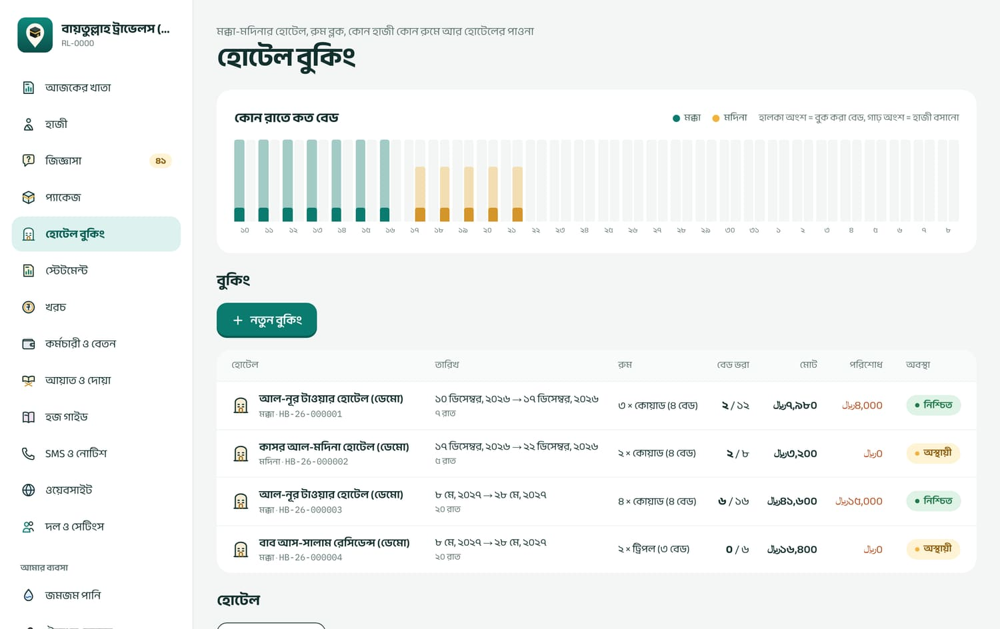
উপরে কোন রাতে মক্কা-মদিনায় কত বেড (হালকা = বুক করা, গাঢ় = হাজী বসানো), নিচে বুকিংয়ের তালিকা
হোটেল যোগ করা
পাতার নিচে নতুন হোটেল চাপুন। হোটেলের নাম, শহর (মক্কা / মদিনা / অন্যান্য), হারাম থেকে দূরত্ব, ঠিকানা, ফোন দিয়ে সংরক্ষণ। হোটেল মোছা যায় না; আর না লাগলে সম্পাদনা থেকে “চালু” টিক তুলে দিন।
বুকিং (রুম ব্লক) করা
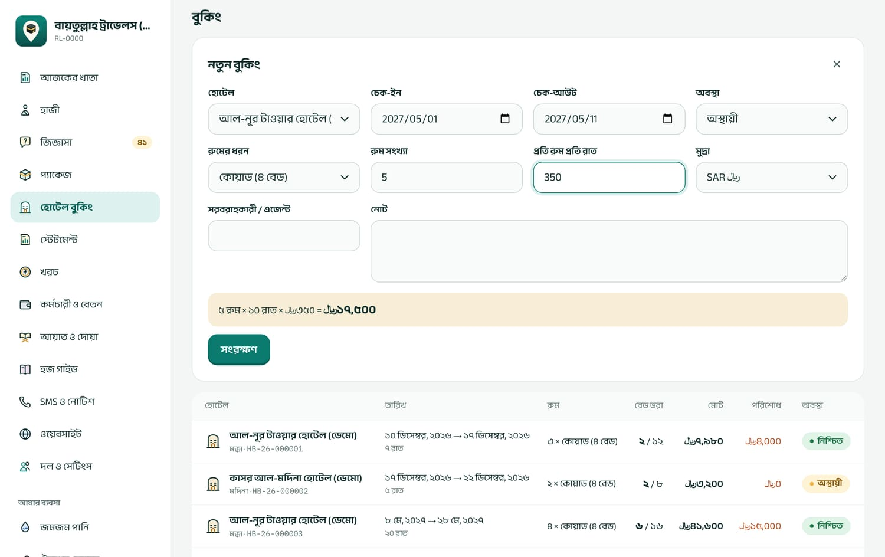
নতুন বুকিং: রুম × রাত × ভাড়া = মোট, নিচের হলুদ লাইনে সাথে সাথে দেখায়
নতুন বুকিং চাপুন, হোটেল বেছে নিন।
চেক-ইন আর চেক-আউট তারিখ দিন।
রুমের ধরন (ডাবল ২ বেড, ট্রিপল ৩, কোয়াড ৪, ৫ বেড), রুম সংখ্যা আর প্রতি রুম প্রতি রাত ভাড়া দিন। মুদ্রা সাধারণত SAR (রিয়াল)।
অবস্থা: অস্থায়ী, নিশ্চিত বা বাতিল। সরবরাহকারী/এজেন্টের নাম দিতে পারেন।
সংরক্ষণ চাপুন। বুকিংয়ের নম্বর হয় HB-26-…, আর বুকিংয়ের পাতা খোলে।
মোট ভাড়া = রুম সংখ্যা × রাত × প্রতি রুম প্রতি রাতের ভাড়া
বেড = রুম সংখ্যা × রুমের বেড (কোয়াড হলে ৪)
বাকি = মোট ভাড়া − হোটেলকে যা পরিশোধ করা হয়েছে
উদাহরণ
৫টি কোয়াড রুম, ১ মে থেকে ১১ মে
১০ রাত
মোট = ৫ × ১০ × SAR ৩৫০
SAR ১৭,৫০০
বেড = ৫ × ৪
২০টি
হোটেলকে দেওয়া হয়েছে
SAR ১০,০০০
বাকি
SAR ৭,৫০০
হাজীকে রুমে বসানো
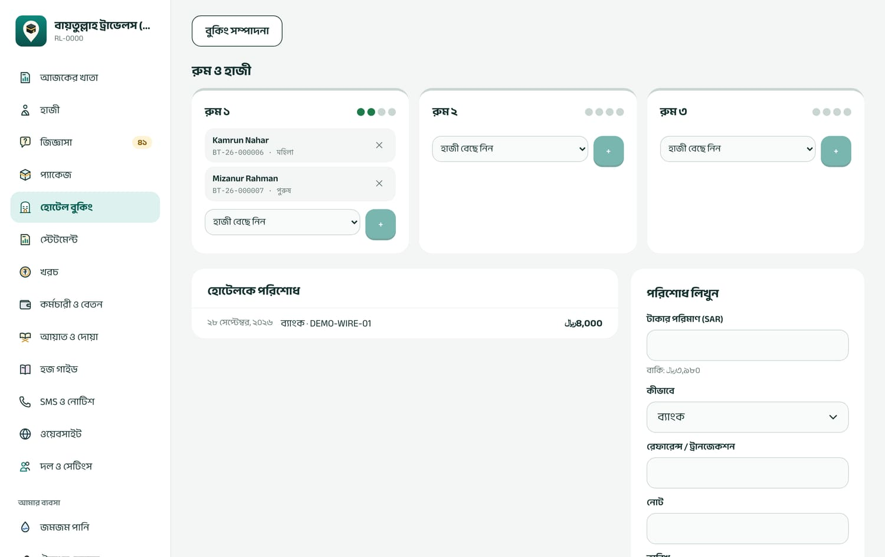
বুকিংয়ের পাতা: প্রতিটা রুমের কার্ডে কে আছেন, ডানে হোটেলকে পরিশোধ
রুমের কার্ডে হাজী বেছে নিন থেকে নাম বেছে + চাপুন। রুম ভরে গেলে আর বাছার ঘর থাকে না।
সরাতে নামের পাশের ✕ চাপুন। অন্য রুমে নিতে আগে সরিয়ে তারপর নতুন রুমে যোগ করুন।
একই হাজী একই রাতে দুই বুকিংয়ে থাকতে পারেন না; চেষ্টা করলে লেখা আসে “এই হাজী একই রাতে আরেক বুকিংয়ে আছেন”।
প্রিন্ট চাপলে হোটেলের ডেস্কে দেওয়ার মতো রুমিং লিস্ট (রুম, নাম, ID, লিঙ্গ) বের হয়।
হাজীর নিজের পাতাতেও “হোটেল ও রুম” ঘরে তিনি কোন হোটেলের কোন রুমে আছেন দেখায়।
হোটেলকে টাকা দেওয়া
বুকিংয়ের পাতায় পরিশোধ লিখুন ঘরে অঙ্ক, মাধ্যম (সাধারণত ব্যাংক), রেফারেন্স আর তারিখ দিয়ে পরিশোধ লিখুন চাপুন। এই টাকা নিজে থেকেই “খরচ” পাতায় “হোটেল” খাতে আর স্টেটমেন্টে ওঠে। রিয়ালের টাকা রিয়ালেই থাকে, টাকায় বদলানো হয় না।
ভুল হলে: বুকিংয়ের তথ্য ভুল হলে বুকিং সম্পাদনা চাপুন; মোট নিজে থেকে আবার হিসাব হয়। বুকিং মোছা যায় না, দরকার না হলে অবস্থা “বাতিল” করুন। হোটেলকে ভুল অঙ্ক পরিশোধ লিখলে খরচ পাতায় সেই “হোটেল” সারিটা বাতিল করুন, তারপর সঠিক অঙ্ক আবার লিখুন। রুম কমাতে চাইলে আগে সেই রুমের হাজীদের সরাতে হবে।
১০খরচ
মেনু: খরচ কে পারবেন: মালিক, অ্যাডমিন, হিসাবরক্ষক
অফিস ভাড়া, বিদ্যুৎ বিল, ভিসা ফি, প্রচার, যেকোনো খরচ এখানে লিখুন। লেখার সাথে সাথে স্টেটমেন্টে ওঠে।
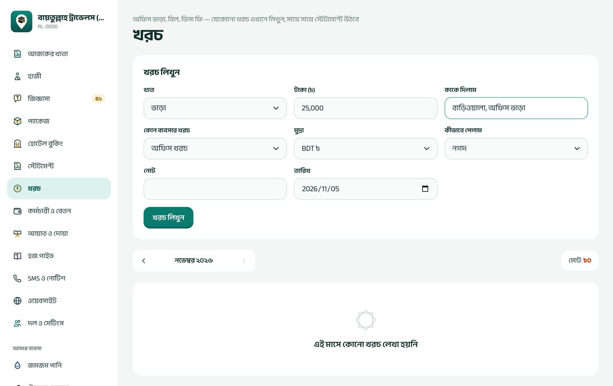
খরচ লিখুন: খাত, টাকা, কাকে দিলাম, কোন ব্যবসার খরচ, মাধ্যম আর তারিখ
খাত বেছে নিন: মালামাল, যাতায়াত/ডেলিভারি, ভাড়া, বিদ্যুৎ/পানি/গ্যাস/ইন্টারনেট, দৈনিক মজুরি, খাবার/আপ্যায়ন, মেরামত, প্রচার, ভিসা/সরকারি ফি, ব্যাংক/অন্যান্য চার্জ বা অন্যান্য।
টাকা আর কাকে দিলাম লিখুন।
কোন ব্যবসার খরচ: অফিস খরচ, হজ ও ওমরা, নাকি কোনো দোকানের।
মুদ্রা (টাকা বা রিয়াল) আর মাধ্যম (নগদ, bKash, ব্যাংক…) বেছে নিন; নগদ ছাড়া হলে ট্রানজেকশন নম্বর দিন।
দরকার হলে তারিখ বদলান (শুধু মালিক, অ্যাডমিন, হিসাবরক্ষক; সর্বোচ্চ ৩১ দিন আগে, ভবিষ্যতের তারিখ নয়)। খরচ লিখুন চাপুন।
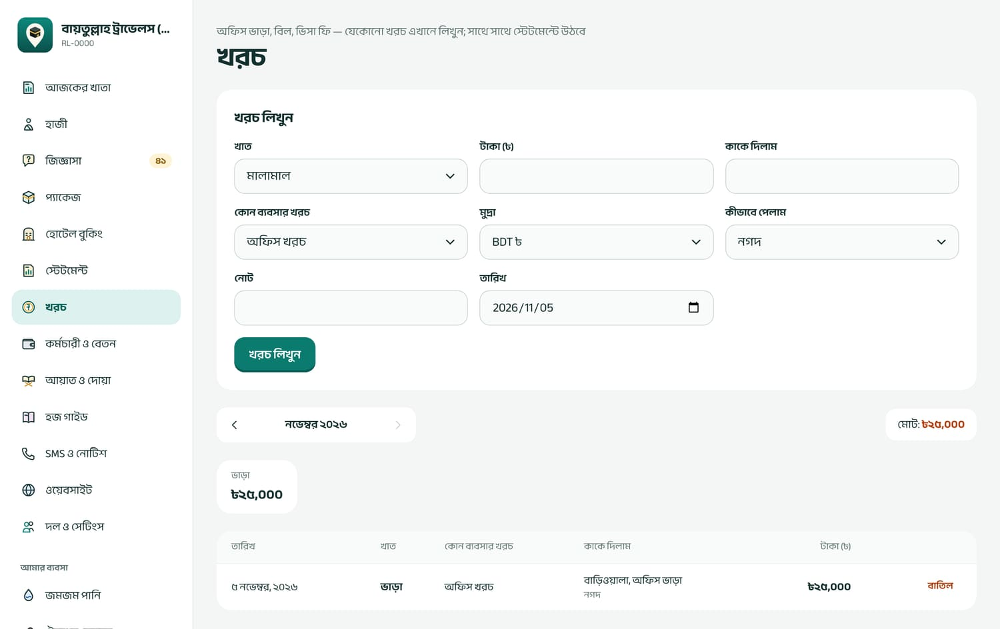
মাসের খরচের তালিকা: উপরে মোট আর খাত অনুযায়ী যোগফল
নিচে মাস অনুযায়ী তালিকা: আগের / পরের দিয়ে মাস বদলান। “মোট” শুধু টাকার খরচ যোগ করে; রিয়ালের খরচ খাতের কার্ডে আলাদা লাইনে দেখায়। এই তালিকায় দোকানের খরচ আর হোটেলের পরিশোধও থাকে। বেতন আর কর্মচারীর অগ্রিম এখানে নয়, স্টেটমেন্টে “বেতন” ও “অগ্রিম বেতন” নামে দেখায়।
ভুল হলে: খরচ সম্পাদনা করা যায় না। সারির পাশে বাতিল চাপুন, কারণ লিখুন, বাতিল নিশ্চিত করুন; তারপর সঠিক খরচ আবার লিখুন। বাতিল আজকের তারিখে হিসাবে ওঠে।
১১কর্মচারী ও বেতন
মেনু: কর্মচারী ও বেতন কে পারবেন: মালিক, অ্যাডমিন, হিসাবরক্ষক; লক করা শিট আবার খুলতে শুধু মালিক ও অ্যাডমিন
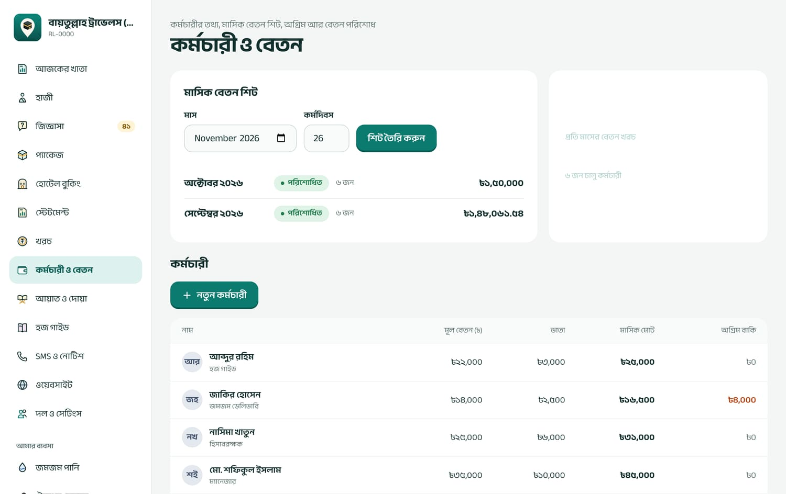
উপরে মাসিক বেতন শিট, নিচে কর্মচারীর তালিকা: মূল বেতন, ভাতা, মাসিক মোট, অগ্রিম বাকি
১১.১ কর্মচারী যোগ
নতুন কর্মচারী চাপুন। নাম, পদবি, মোবাইল, যোগদানের তারিখ দিন।
মূল বেতন দিন। বেতন পান যেভাবে (নগদ, bKash, ব্যাংক) আর অ্যাকাউন্ট নম্বর দিন।
ভাতা: খাত আর টাকা, যেমন বাড়ি ভাড়া ৩,০০০, যাতায়াত ১,০০০। + আরেকটি যোগ করুন দিয়ে আরও ভাতা।
সংরক্ষণ। পরে বদলাতে কর্মচারীর পাতায় তথ্য বদলে সংরক্ষণ করুন। কেউ চাকরি ছাড়লে “চালু (শিটে আসবে)” টিক তুলে দিন; কর্মচারী মোছা যায় না।
১১.২ অগ্রিম দেওয়া
কর্মচারীর পাতায় অগ্রিম দিন ঘরে অঙ্ক, মাধ্যম, তারিখ দিয়ে অগ্রিম দিন চাপুন। টাকাটা সাথে সাথে অফিসের খরচ হিসেবে ওঠে, আর “অগ্রিম বাকি” বাড়ে। পরে বেতন শিটে “অগ্রিম কর্তন” দিয়ে কেটে নেওয়া হয়।
অগ্রিম একবার লিখলে বাতিল বা বদলানো যায় না। ভুল অঙ্ক দিলে একমাত্র উপায় বেতন থেকে কেটে সমন্বয় করা। লেখার আগে অঙ্কটা দুবার দেখুন।
১১.৩ মাসের বেতন শিট
মাস আর কর্মদিবস (সাধারণত ২৬) দিয়ে শিট তৈরি করুন চাপুন। সব চালু কর্মচারী তাঁদের বর্তমান বেতন-ভাতা নিয়ে শিটে আসেন। শিট থাকে “খসড়া”।
যাঁর অনুপস্থিতি, ওভারটাইম, অগ্রিম কর্তন, বোনাস বা অন্য কর্তন আছে, তাঁর সারিতে সম্পাদনা চাপুন। নিচের লাইনে সাথে সাথে দেখায় “মোট বেতন − মোট কর্তন = হাতে পাবেন”।
সব ঠিক হলে শিট লক করুন। এরপর অঙ্ক আর বদলায় না।
বেতন দেওয়ার পর মাধ্যম আর তারিখ বেছে পরিশোধ করুন চাপুন। প্রত্যেকের বেতন খরচ হিসেবে মূল খাতায় ওঠে, শিট হয় “পরিশোধিত”।
প্রিন্ট চাপলে স্বাক্ষরের কলামসহ বেতন শিট বের হয় (প্রস্তুতকারী, যাচাইকারী, অনুমোদনকারী)।
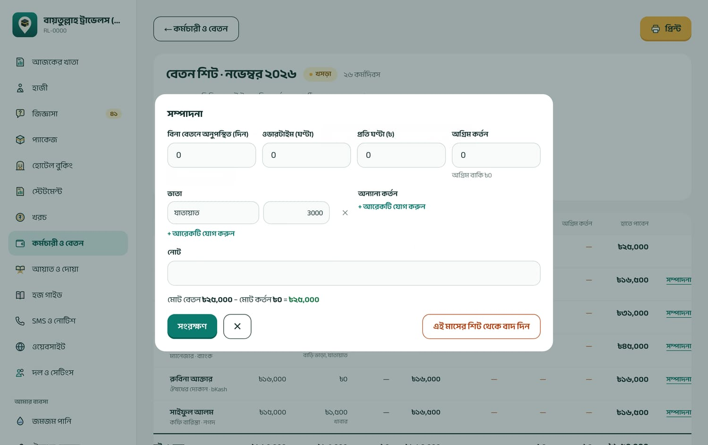
শিটে একজনের সারি সম্পাদনা: অনুপস্থিতি, ওভারটাইম, অগ্রিম কর্তন, ভাতা আর অন্য কর্তন
পরিশোধ করুন চাপার পর আর কোনো নিশ্চিতকরণ চাওয়া হয় না, আর পরিশোধিত শিট কখনো বদলানো যায় না। চাপার আগে প্রিন্ট করে মিলিয়ে নিন।
বেতনের হিসাব
ওভারটাইম = ঘণ্টা × প্রতি ঘণ্টার হার
মোট বেতন = মূল বেতন + ভাতা + ওভারটাইম
অনুপস্থিতি কর্তন = মূল বেতন × অনুপস্থিত দিন ÷ কর্মদিবস (শুধু মূল বেতন থেকে, ভাতা থেকে নয়)
মোট কর্তন = অনুপস্থিতি কর্তন + অন্যান্য কর্তন + অগ্রিম কর্তন
হাতে পাবেন = মোট বেতন − মোট কর্তন
উদাহরণ (কর্মদিবস ২৬)
মূল বেতন
৳১৫,০০০
ভাতা: বাড়ি ভাড়া ৩,০০০ + যাতায়াত ১,০০০
৳৪,০০০
ওভারটাইম ৪ ঘণ্টা × ১০০
৳৪০০
মোট বেতন
৳১৯,৪০০
অনুপস্থিতি ২ দিন: ১৫,০০০ × ২ ÷ ২৬
− ৳১,১৫৩.৮৫
দেরিতে আসা
− ৳২০০
অগ্রিম কর্তন
− ৳২,০০০
হাতে পাবেন
৳১৬,০৪৬.১৫
ভুল হলে:
খসড়া শিটে: আবার সম্পাদনা করুন।
লক করা শিটে: মালিক বা অ্যাডমিন আবার খুলুন চেপে ঠিক করে আবার লক করবেন।
শিট বানানোর পর কারও মূল বেতন বদলেছেন: শিটে পুরোনো বেতনই থাকে। ওই সারিতে “এই মাসের শিট থেকে বাদ দিন” চেপে তারপর নতুন কর্মচারী যোগ / কর্মদিবস হালনাগাদ চাপুন; নতুন বেতন নিয়ে ফিরে আসবে।
পরিশোধিত শিটে বেশি দিয়ে ফেলেছেন: পরের মাসের শিটে “অন্যান্য কর্তন” দিয়ে কেটে নিন; কম দিলে পরের মাসে ভাতা হিসেবে যোগ করুন।
১২আমার ব্যবসা: জমজম, ঔষধ, কফি শপ
মেনু: আমার ব্যবসা (জমজম পানি, ঔষধের দোকান, নাবা কফি শপ, সুপারনোভা) কে পারবেন: মালিক, অ্যাডমিন, হিসাবরক্ষক, স্টাফ আর যাঁকে ওই দোকানের লগইন দেওয়া হয়েছে
এজেন্সির পাশের ব্যবসাগুলোর প্রতিটার নিজের পণ্য, স্টক, ক্রেতা, বিক্রি আর দৈনিক হিসাব আছে। কোন দোকান মেনুতে থাকবে তা দল ও সেটিংস থেকে চালু-বন্ধ করা যায় (প্ল্যানে থাকলে)। প্রতিটা দোকানের উপরে ট্যাব: বিক্রি, ৭ রোড (শুধু জমজম), পণ্য ও স্টক, ক্রেতা (জমজমে “দোকান”), বিক্রির তালিকা, দৈনিক হিসাব।
কে কী পারেন
দোকানে যাঁর প্রবেশাধিকার আছে, সবাই: তালিকার দামে বিক্রি, স্টক নেওয়া ও ঠিক করা, ক্রেতা যোগ, বকেয়া আদায়, ডেলিভারি লেখা, আজকের খরচ লেখা।
শুধু মালিক, অ্যাডমিন, হিসাবরক্ষক: পণ্য ও দাম বানানো-বদলানো, বিক্রির সময় দাম বদল বা ছাড়, বিক্রি ও খরচ বাতিল, আগের তারিখে লেখা।
১২.১ বিক্রি করা
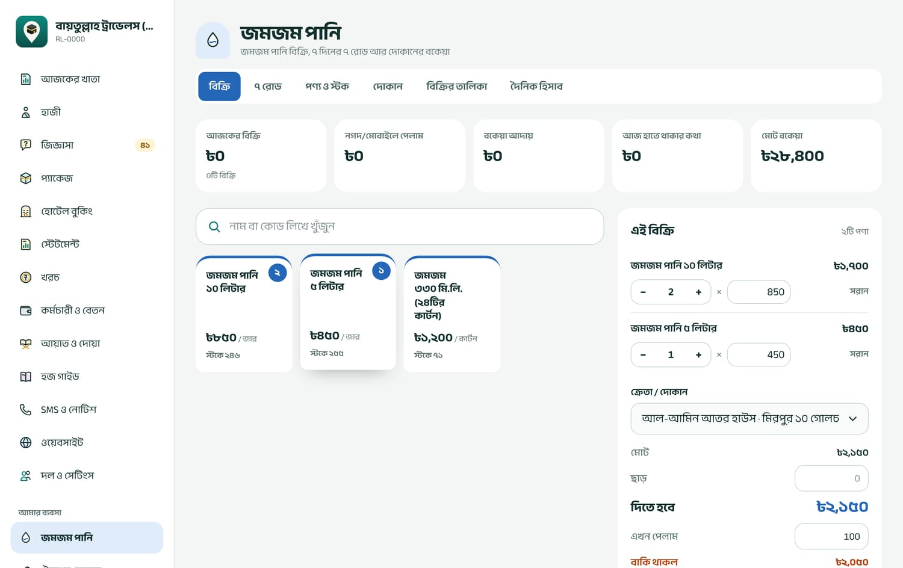
বিক্রির পর্দা: উপরে আজকের হিসাব, মাঝে পণ্য, ডানে “এই বিক্রি”, ক্রেতা আর কত পেলাম
পণ্যের ঘরে চাপ দিন (বারকোড স্ক্যানারও চলে)। যতবার চাপবেন, পরিমাণ তত বাড়বে; ডানে −/+ দিয়েও বদলানো যায়। স্টকের বেশি দেওয়া যায় না।
ক্রেতা / দোকান: সাধারণ ক্রেতা (নাম ছাড়া) বা নির্দিষ্ট ক্রেতা বেছে নিন। বাকিতে দিলে নির্দিষ্ট ক্রেতা লাগবেই।
এখন পেলাম ঘরে কত টাকা পেলেন লিখুন। পুরো টাকা পেলে পুরো টাকা, পুরোটা বাকি হলে পুরোটা বাকি চাপুন। “বাকি থাকল” ঘরে বাকিটা দেখায়।
মাধ্যম বেছে নিন (নগদ ছাড়া হলে ট্রানজেকশন নম্বর), তারপর বিক্রি করুন। “বিক্রি হয়েছে · ZM-26-…” এলে রসিদ দেখুন ও প্রিন্ট করুন চাপুন।
মোট = প্রতিটা পণ্যের পরিমাণ × দাম, যোগ করে
দিতে হবে = মোট − ছাড়
বাকি থাকল = দিতে হবে − এখন পেলাম (এটা ক্রেতার বকেয়ায় যোগ হয়)
উদাহরণ: ১০ জার × ৳১২০ = ৳১,২০০; ছাড় ৳১০০ → দিতে হবে ৳১,১০০। এখন পেলাম ৳৬০০ → বাকি ৳৫০০ ওই দোকানের বকেয়ায় যোগ হলো। আজকের “নগদ/মোবাইলে পেলাম” বাড়ল ৳৬০০।
পণ্যের “কেনা দাম” রাখা যায়, কিন্তু সফটওয়্যার এখনো লাভের হিসাব দেখায় না।
১২.২ পণ্য ও স্টক
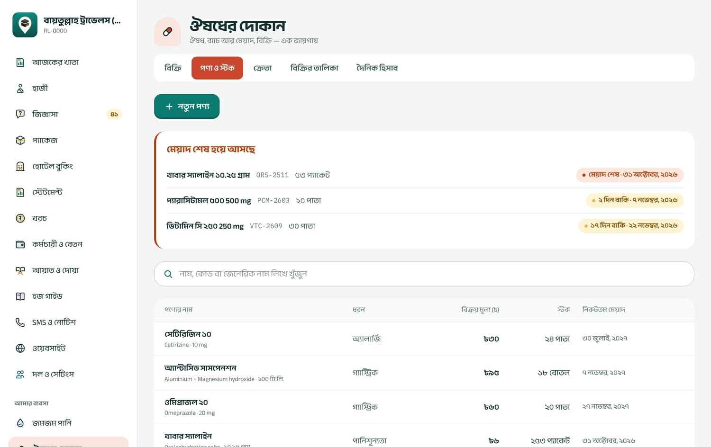
ঔষধের দোকানের পণ্য: উপরে লাল ঘরে যেসব ব্যাচের মেয়াদ শেষ হয়ে আসছে
নতুন পণ্য (মালিক, অ্যাডমিন, হিসাবরক্ষক): নাম, কোড/বারকোড, একক (পিস, পাতা, জার, কাপ), বিক্রয় মূল্য, কেনা দাম, কত স্টকের নিচে নামলে সতর্ক করবে। ঔষধে জেনেরিক নাম আর শক্তি (যেমন ৫০০ mg)। কফির মতো তৈরি করে বিক্রির পণ্যে “স্টক গুনে রাখুন” বন্ধ রাখতে পারেন।
নতুন পণ্যের স্টক শূন্য থেকে শুরু। পণ্যের পাতায় নতুন স্টক এল ঘরে পরিমাণ (ঔষধে ব্যাচ নম্বর আর মেয়াদ) দিয়ে স্টক তুলুন।
ঔষধ বিক্রির সময় যে ব্যাচের মেয়াদ আগে শেষ হবে, সেটা থেকে আগে যায়। মেয়াদ পেরোনো ব্যাচ বিক্রি হয় না।
পণ্য মোছা যায় না; বন্ধ করতে “বিক্রির জন্য চালু” টিক তুলে দিন।
স্টক = যত এল − যত বিক্রি হলো ± সংশোধন + বাতিল হওয়া বিক্রি থেকে ফেরত
স্টক নেওয়ার সময় কোনো টাকা লেখা হয় না। সরবরাহকারীকে টাকা দিলে দৈনিক হিসাব পাতার নিচে “মালামাল” খাতে খরচ লিখুন।
স্টক ভুল হলে: পণ্যের পাতায় স্টক ঠিক করুন: কমাতে মাইনাস দিয়ে (যেমন −৫) সংখ্যা আর কারণ লিখুন (ভেঙে গেছে, গুনে কম পাওয়া গেছে, মেয়াদ শেষ)। স্টকের খাতার কোনো লাইন মোছা যায় না, সব লেখা থাকে।
১২.৩ ক্রেতা, বাকি আর আদায়
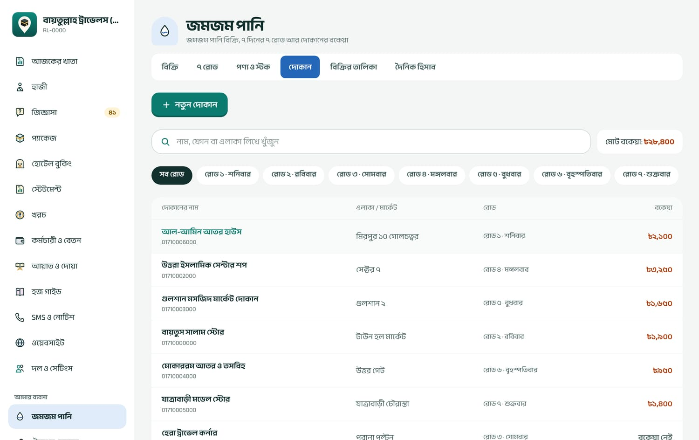
জমজমের দোকানের তালিকা: রোড অনুযায়ী ছাঁকনি আর প্রত্যেকের বকেয়া
নতুন ক্রেতা (জমজমে নতুন দোকান): নাম, ফোন, এলাকা/মার্কেট, ঠিকানা; জমজমে কোন রোডে আর রোডে কততম দোকান।
আগের বাকি (সফটওয়্যারের আগের): শুধু ক্রেতা যোগ করার সময় দেওয়া যায়, পরে বদলানো যায় না।
ভুল আদায় বাতিল করা যায় না। বকেয়া আদায়ের অঙ্ক একবার লিখলে বদলানো বা বাতিলের ব্যবস্থা নেই। লেখার আগে অঙ্কটা মিলিয়ে নিন।
১২.৪ জমজমের ৭ রোড
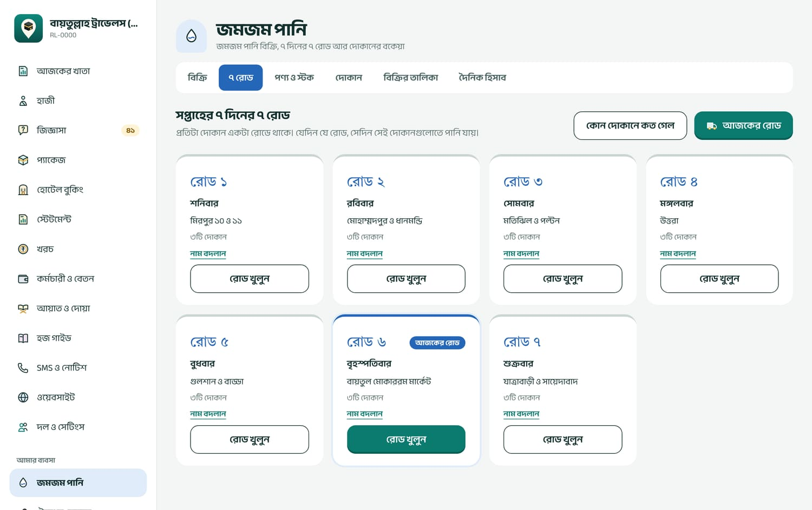
সপ্তাহের ৭ দিনের ৭ রোড: আজকের রোড আলাদা করে চিহ্নিত
সপ্তাহের প্রতিটা দিনের জন্য একটা রোড: রোড ১ শনিবার থেকে রোড ৭ শুক্রবার। প্রতিটা দোকান একটা রোডে থাকে; যেদিন যে রোড, সেদিন সেই দোকানগুলোতে পানি যায়।
আজকের রোড বা যেকোনো রোডের রোড খুলুন চাপুন। সেদিনের দোকানের তালিকা আসে।
প্রিন্ট চাপলে ডেলিভারিম্যানের জন্য কাগজ বের হয়: দোকান, এলাকা, ফোন, বকেয়া, আর কত দিলেন ও কত পেলেন লেখার খালি ঘর।
ফিরে এলে প্রতিটা দোকানে কত দিলেন, এখন পেলাম আর আগের বকেয়া আদায় লিখে লিখে রাখুন চাপুন। প্রতিটা ডেলিভারি একটা বিক্রি (ZM-…) হিসেবে ওঠে।
এখানে “এখন পেলাম” ফাঁকা রাখলে পুরো ডেলিভারি বাকিতে যায় (বিক্রির পর্দায় উল্টোটা: সেখানে পুরো টাকা ধরে নেয়)। রোডের ডেলিভারি সবসময় নগদ হিসেবে ওঠে। কোন দোকানে কত গেল রিপোর্টে তারিখ আর রোড বেছে দোকান অনুযায়ী মোট দেখা যায়।
১২.৫ দৈনিক হিসাব
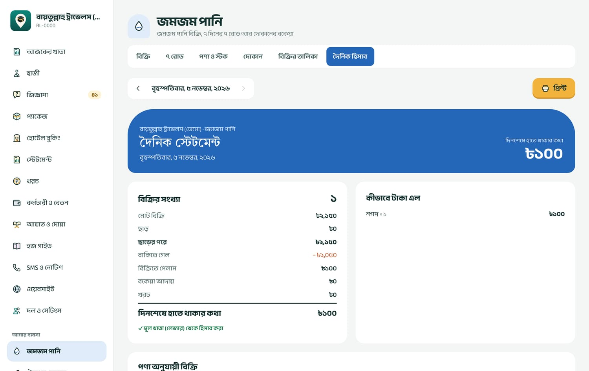
দোকানের দৈনিক স্টেটমেন্ট: দিনশেষে হাতে কত থাকার কথা
মোট বিক্রি − ছাড় = ছাড়ের পরে
ছাড়ের পরে − বাকিতে গেল = বিক্রিতে পেলাম
দিনশেষে হাতে থাকার কথা = বিক্রিতে পেলাম + বকেয়া আদায় − খরচ (± আগের দিনের বিক্রি বাতিল)
উদাহরণ: মোট বিক্রি ৳৫,০০০, ছাড় ৳২০০ → ৳৪,৮০০; বাকিতে ৳১,৩০০ → পেলাম ৳৩,৫০০; আদায় ৳১,০০০; খরচ ৳৪০০ → দিনশেষে থাকার কথা ৳৪,১০০। এই অঙ্কে bKash, Nagad আর ব্যাংকে পাওয়া টাকাও আছে; “কীভাবে টাকা এল” অংশে মাধ্যম অনুযায়ী ভাগ দেখুন। দিন শেষে ক্যাশ গুনে এই অঙ্কের সাথে মেলান।
পাতার নিচে খরচ লিখুন দিয়ে দোকানের আজকের খরচ (মালামাল, ডেলিভারি ভাড়া ইত্যাদি) লেখা যায়।
ভুল বিক্রি: বিক্রি সম্পাদনা করা যায় না। মালিক, অ্যাডমিন বা হিসাবরক্ষক বিক্রির তালিকা থেকে সেটা বাতিল করবেন (কারণসহ)। বাতিল করলে স্টক ফেরত আসে, পাওয়া টাকা আজকের হিসাব থেকে কমে, আর ক্রেতার বকেয়া থেকে ওই বিক্রির বাকি বাদ যায়। তারপর সঠিক বিক্রি আবার করুন।